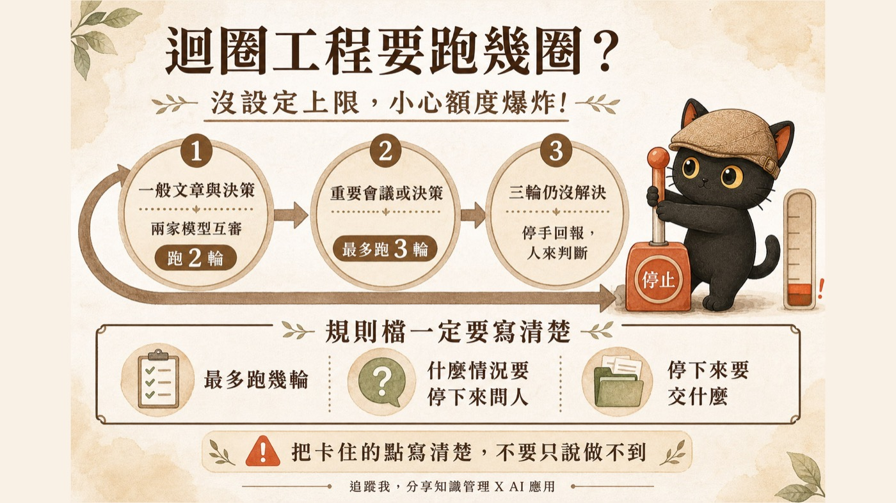

這篇在講什麼
讓 AI 自己跑迴圈，最常被講的是它多好用：做完自己檢查、沒過自己修、修完再檢查，通過才交出來。很少人講另一半，就是它沒過的時候會怎樣。它會修第二遍、第三遍、第一百遍，中間不會停下來問你，因為你沒叫它停。這篇講怎麼設圈數上限、什麼情況要停手、停手的時候它該交什麼給你，三行就能寫進你的規則檔。
- 已經在用迴圈或自動任務，跑過一次之後發現額度掉很快的人
- 讓兩個 AI 互相審稿、互相挑錯，結果它們沒完沒了聊下去的人
- 想開始做迴圈，想先知道要在哪裡踩煞車的人
- 一張我自己在用的圈數表：一般任務兩輪、重要決策三輪、三輪不過就停手
- 三行可以直接貼進規則檔的停止條件，含最容易漏掉的第三行
- 一句開跑前就能問 AI 的話，先拿到它預期會卡在哪

一、迴圈美好的那一面，跟它的另外一半
迴圈工程的基本做法是這樣：你給它一張驗收清單，它做完自己對照，沒過就修，修完再對照一次，通過才交出來。中間那幾圈它自己跑，你只負責開頭給料、結尾收成品。
這件事真的很好用。我自己的發文、會議整理、復盤都是這樣跑的。
而它有另外一半，很少被一起講：如果它一直沒過呢？
這跟當機不一樣。當機你馬上看得到。這個看起來一切正常，訊息一直在跑，工作一直在做，直到你隔天早上打開來看，額度已經沒了。
- 每件事 AI 都要我確認，怎麼可以更自動？｜什麼是迴圈工程 那篇講一個迴圈的五個階段跟最少要哪幾個零件，停止條件是其中一個零件；這篇是把那個零件拆開來講。
二、所以我後來一定先設圈數
先設上限，再開始跑。這是順序問題，事後補救沒有意義，因為燒掉的額度不會回來。
我自己的預設是這樣：
| 任務類型 | 跑幾輪 | 為什麼是這個數字 |
|---|---|---|
| 一般的文章與決策 | 兩家模型互審，跑 2 輪 | 兩輪就能把明顯的漏洞抓出來，第三輪開始多半在調字句 |
| 很重要的會議或決策 | 最多跑 3 輪 | 賭注比較大，多給一輪讓它把真正的分歧攤出來 |
| 第三輪 | 強制檢查點，停下來回報我 | 要不要再給一輪，由我看過回報再決定，不是它自己續跑 |
這張表不用照抄。重點是你手上要有一個數字，而不是一句「跑到好為止」。
三、為什麼三輪之後是停手，不是再多給它幾輪
因為我自己遇到的，多半是我這邊講不清楚。我講不清楚的事情，它討論一百遍也一樣講不清楚。
多給的每一輪，都是在同一個模糊的題目上再繞一次。
這句話會改變你對「停手」的理解：停手代表這件事被交還給唯一能解決它的人。可能是驗收標準寫得太模糊，可能是兩個要求互相矛盾，可能是我根本還沒想清楚自己要什麼。這幾種情況 AI 都解不了，它只能一直產出看起來很努力的東西。
所以第三輪之後，我要的不是第四份稿子，是一份說明：它到底卡在哪裡。
題目模糊是我最常遇到的一種，而它不是唯一一種。跑不完的原因至少有四類，我都遇過：
| 卡住的原因 | 你會看到什麼 | 誰能解 |
|---|---|---|
| 題目本身模糊，或兩個要求互相矛盾 | 每輪都在改字句，核心問題沒動 | 人，把標準改清楚 |
| 資料不在它手上，或它讀不到那個檔 | 它一直在猜、一直加免責 | 人，把資料補進去 |
| 權限或工具不足（不能執行、不能存取） | 它繞路做出一個近似品 | 人，開權限或換工具 |
| 這件事超出這個模型的能力 | 反覆給出同一種錯法 | 換模型或換做法 |
四種都是人要動手，AI 自己再跑幾輪都跑不出來。而它們的處理方式完全不同，所以停手回報那一份說明才重要：它幫你分辨自己現在踩到哪一種。
四、三行寫進規則檔
貼之前先把「一輪」講清楚，不然它會自己解釋。我的算法是：一次完整的產出加一次審查，算一輪。AI 自己在同一輪裡改三次字句，那還是一輪。
這三行你可以直接貼進自己的規則檔、專案指令，或是每次派工的時候補在最後：
我自己規則檔裡的寫法，是規定回報的第一行只能三選一：
「卡住：在等什麼」這一句很有用。它強迫 AI 講出自己在等的東西，而那個東西幾乎都是我沒給的：一個沒定義的詞、一個沒拍板的選項、一份它讀不到的檔案。看到那句話，我通常十秒鐘就知道要補什麼。
派工的時候我還會多補一句：最多 N 輪，卡住就停下來回報，不要硬幹。
五、上限不是計時器，它是報酬遞減的煞車
有個地方值得說清楚，不然這條規則會被用成死板的計數器。
我規則檔裡這一條的原文寫的是「反思迴圈 2–3 輪報酬遞減即停」。判準是報酬遞減，數字是你回頭去看那條曲線的時機。
兩種狀況長得很像，處理方式完全相反：
| 狀況 | 現象 | 怎麼處理 |
|---|---|---|
| 正在收斂 | 第一輪十個問題，第二輪五個，第三輪剩一個字要改 | 讓它跑完，剩最後一哩 |
| 原地打轉 | 每一輪都是差不多份量的意見，改完又冒出同一類問題 | 停手，問題在題目本身 |
給一個我自己的例子。我在 8 月 30 日發的那篇迴圈與圖譜的文章，跨家審實際上跑了四輪，比我自己寫的三輪上限還多一輪。
四輪的紀錄是這樣：第一輪回來八個問題（定義擴大化、前後矛盾、單次事件被寫成通則等等），第二輪確認五點已修、三點要加嚴、另外抓到一組自相矛盾，第三輪只剩一處字樣要改，第四輪通過。
八點、三點、一點、通過。這是很清楚的收斂曲線，所以第三輪停下來的時候，是我決定再放一輪。如果第三輪回來的還是八點，那我就會停手，因為那代表我給的定義本身有問題。
多出來的那一輪是我批准的，不是它自己決定的。這個差別就是「有上限」跟「沒上限」的差別。
- 可以放著讓 AI 自己跑完嗎？｜迴圈工程與圖譜工程不用會寫程式也學得會 上面那個跑了四輪的案例，就是這篇文章本身的跨家審紀錄。
- AI 一直停下來要授權，怎麼讓它順順跑完？：迴圈護欄的五條規則 那篇管的是另一種煞車：同一個方法失敗兩次就換路。這篇管的是它沒有失敗、一直在正常工作的時候，可以工作幾輪。
六、不確定要幾圈，可以直接問它
你不用自己憑感覺決定所有任務的圈數。開跑前直接問：
它給的數字不見得準，而這個問句真正的價值在後半段：它會逼 AI 先講出「我預期會卡在哪」。那份預期通常很準，因為它已經讀過你的任務說明，知道哪裡寫得模糊。
你會在開跑前就拿到一份風險清單，那比跑完三輪之後才發現問題便宜太多。
七、誠實的邊界
有幾件事要講清楚，免得你照抄之後以為有保障：
你今天可以做的第一步
打開你最常用的那個 AI 的規則檔、專案指令、或自訂指令，把第四節那三行貼進去。花不到一分鐘。
如果你還沒有規則檔，就在下一次派長任務的時候，把那三行貼在指令最後面。
然後在下一次它停下來回報的時候，看一件事：它有沒有告訴你它卡在哪。有，這條規則就開始替你省錢了。
- 每件事 AI 都要我確認，怎麼可以更自動？｜什麼是迴圈工程 前置觀念，一個迴圈的五個階段與最少零件。
- AI 一直停下來要授權，怎麼讓它順順跑完？：迴圈護欄的五條規則 另一種煞車，管同一個方法一直失敗時怎麼換路。
- 交代過的事 AI 為什麼老是忘記？：從『我記住了』到讓 AI 自己跑 8/2 講座總覽篇，這篇是它列出的段落之一的完整版。
- 如何讓兩個不同的 AI 互相挑錯、自己訂正？ 互審流程的完整做法，圈數上限是它的其中一個設定。
- AI 越用越貴，我掃了自己一個月的用量 額度已經在燒的話，那篇教你先查清楚錢花到哪裡去了。